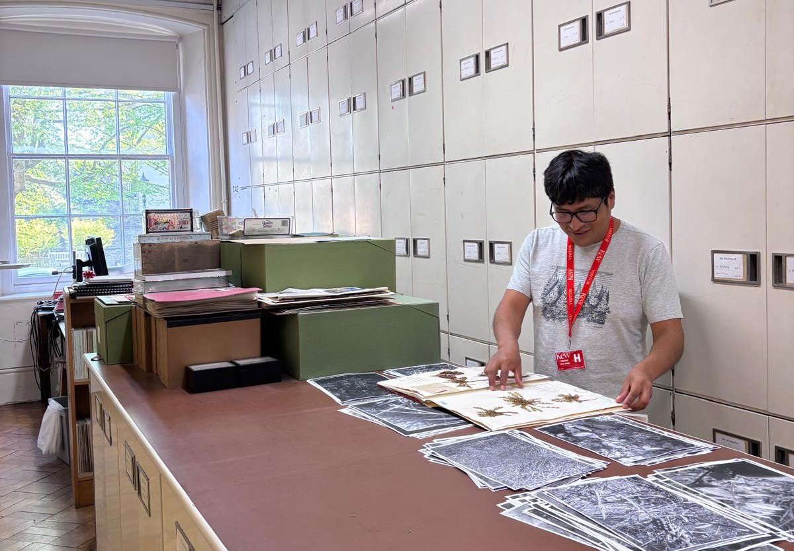
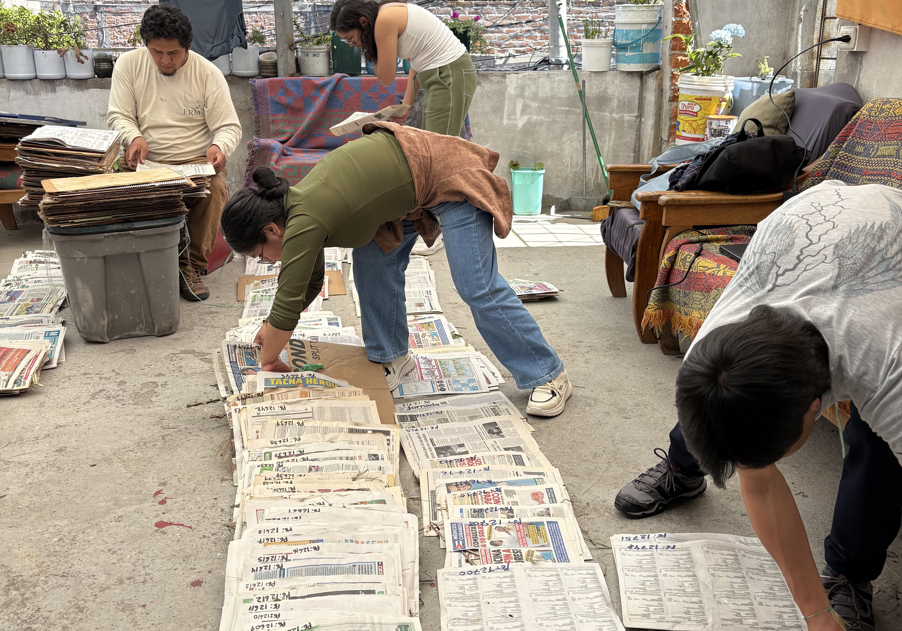
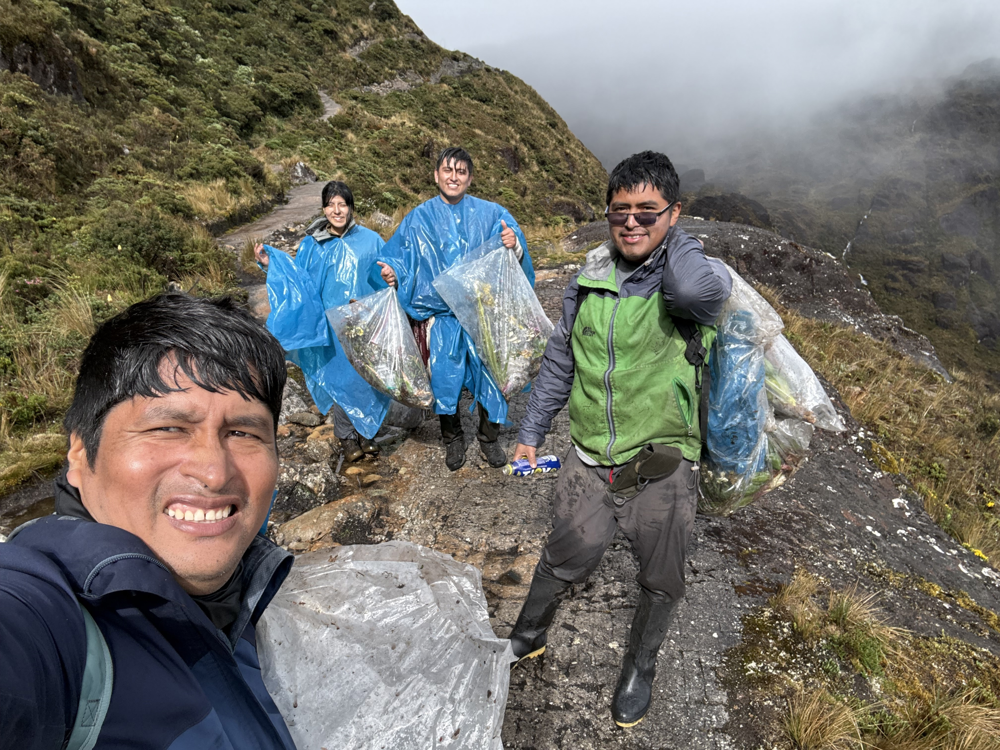

Taxonomic identification, nomenclature validation, and scientific reports for plant specimens.

Specimen preparation, curation, digitization, and management of botanical collections.

Floristic inventories, ecological studies, and vegetation analysis for conservation planning.

Field surveys in Andean ecosystems for biodiversity discovery and monitoring.

Courses in botany, taxonomy, conservation, and scientific field methods.